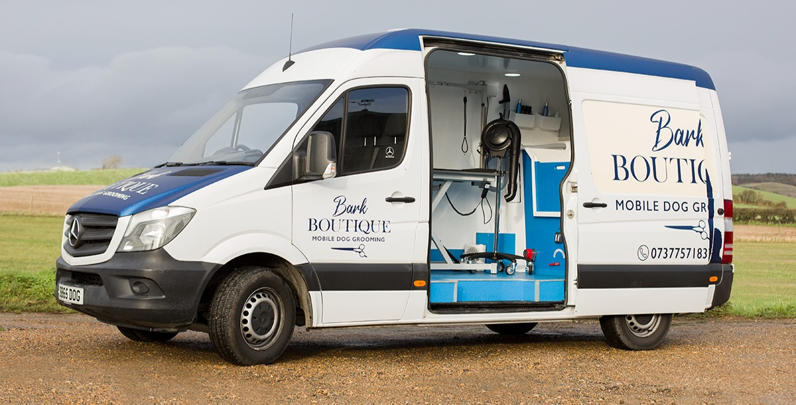
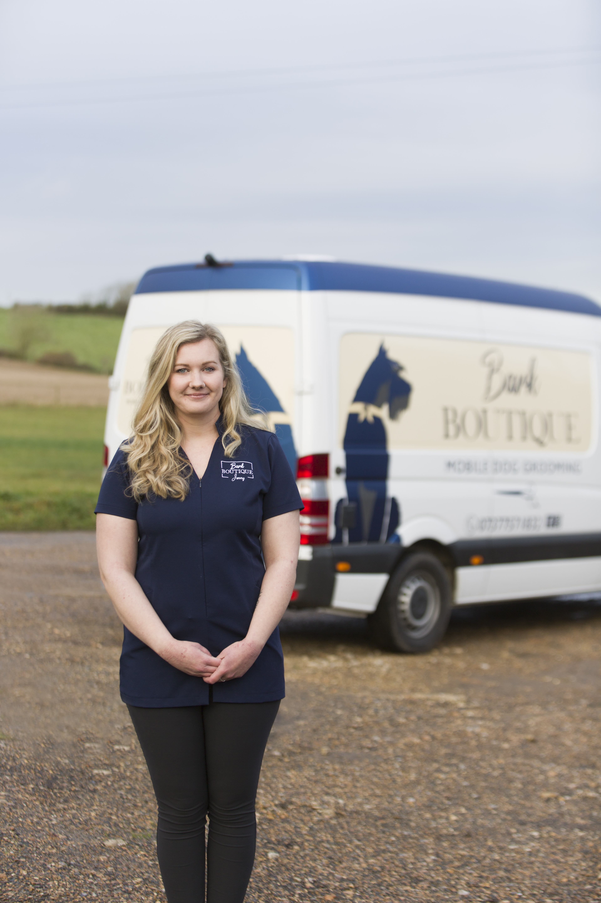

Full groom
A bath, dry and all-over trim, with attention to the little details.
ONE DOG. ONE GROOMER. RIGHT OUTSIDE.
Kind, one-to-one grooming with Jenny, brought to your doorstep on the Isle of Wight. All the care of a salon, without the journey.
Mobile grooming · Tuesday–Saturday · By appointment

CARE FOR EVERY COAT
From a freshen-up to a full transformation. Choose a starting point and Jenny can help find the right fit for your dog.
A bath, dry and all-over trim, with attention to the little details.
A coat refresh, brush-out and tidy essentials between bigger grooms.
A gentle introduction to grooming sounds, sensations and little trims.
Also available: handstripping, de-shedding & nail clipping.
Jenny confirms suitability, price and availability before booking.

YOUR DOG’S NEW FAVOURITE PERSONTHE PERSON BEHIND THE PAMPER
A professional groomer.
An animal person, through and through.
Jenny started Bark Boutique in November 2020 after working in veterinary practices. Her aim: a kind, relaxed grooming experience, right on your doorstep.
With City & Guilds training and International Certified Master Groomer status, she brings a serious love of her craft to every coat.
And off duty? Life includes Quinn the Chihuahua and toy poodles Bob and Deedee. Bob has even placed third in his class at Crufts.
Read Jenny’s story on her current siteTHE SALON COMES TO YOU
A few useful details upfront help Jenny understand the coat, the service and your location.
This is a request, not an instant booking. Jenny checks the details and confirms an appointment personally.
The van carries its own water. It needs a plug socket within reach of its 35-metre cable, and parking on the same side of the road.
She may be driving or grooming, and signal in the van can be limited. A structured enquiry could put useful information in one place, ready for when she can reply.
No. This is an independent design demonstration. Nothing here reaches Jenny. Use the official Bark Boutique website for genuine enquiries.
A LITTLE LESS BACK-AND-FORTH
Imagine the useful details arriving together, instead of across several messages.
Use made-up details. This form only creates a preview on this page. Nothing is sent or saved, and no appointment is booked.
For a real enquiry, please visit the official website.
MADE FOR BARK BOUTIQUE
A clearer mobile layout, Jenny’s story front and centre, and a calmer enquiry journey. A starting point for a conversation—not a proposal to change how you care for dogs.